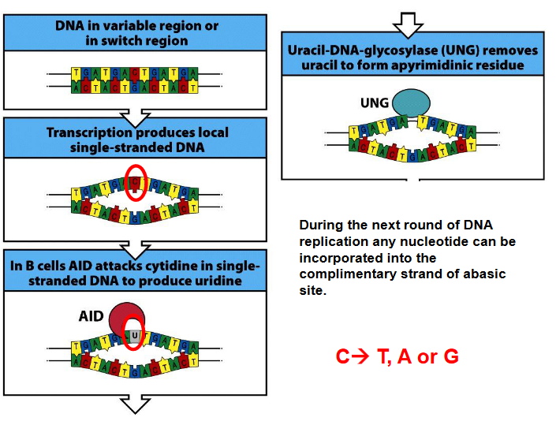

3 B Cells
A B cell, or B lymphocyte, is a type of white blood cell that plays a crucial role in the adaptive immune response. These cells are integral to the immune system’s ability to recognize and neutralize pathogens such as bacteria, viruses, and other harmful substances.
One of the primary functions of B cells is to produce antibodies, which are specialized proteins that can recognize and bind to specific antigens, such as those found on the surface of pathogens. When a B cell encounters its specific antigen, it undergoes activation and proliferation, leading to the generation of antibody-producing cells called plasma cells. These plasma cells then secrete large quantities of antibodies into the bloodstream, where they can target and neutralize pathogens, marking them for destruction by other immune cells.
The name “B cell” originated from studies conducted in birds, particularly chickens, where researchers identified a specialized organ called the Bursa of Fabricius as the primary site of B cell development and maturation. However, in mammals like humans and mice, B cells originate from precursor cells found in the bone marrow in adults or the fetal liver in embryos. These precursor cells undergo a series of differentiation and maturation steps within the bone marrow or fetal liver, eventually giving rise to mature B cells capable of responding to specific antigens encountered in the body.
3.1 Parts of a an Antibody
Antibodies, also known as immunoglobulins, are complex proteins produced by B cells and play a critical role in the adaptive immune response. They consist of two heavy chains and two light chains, each with distinct regions and functions.
Variable Region: The variable region of an antibody, located at the antigen-binding site, is highly diverse and responsible for recognizing and binding to specific antigens. The process of generating this diversity involves V(D)J recombination, where gene segments encoding the variable regions of both heavy and light chains undergo rearrangement, resulting in a vast array of antigen-binding specificities.
Constant Region: The constant region of an antibody, found in the heavy chains, determines the antibody’s isotype or class, such as IgM, IgD, IgG, IgE, or IgA. The process of class switching allows B cells to change the isotype of the antibodies they produce without changing the antigen specificity. This process occurs after B cell activation and involves recombination events that replace one constant region gene segment with another, leading to the production of antibodies with different effector functions.
Antibodies are composed of two identical heavy chains and two identical light chains, held together by disulfide bonds. The heavy chains are encoded by the Igh gene, while the light chains can be either kappa (Igκ) or lambda (Igλ), encoded by the Igκ or Igλ genes, respectively. Within an individual B cell or antibody-producing cell, only one type of light chain—either kappa or lambda—is utilized for antibody assembly.
3.2 B Cell Processes
3.2.1 B Cell Development
3.2.2 Generating B Cells with Diverse Specificities
Antibodies, also known as B cell receptors (BCRs) when expressed on the surface of B cells, are critical components of the adaptive immune system responsible for recognizing and neutralizing pathogens. The diversity of antibodies is achieved through a process called V(D)J recombination, which involves the rearrangement of gene segments to generate a vast array of antigen-binding specificities.
In vertebrates, including humans, antibodies are encoded by only three genes:
Igh: This gene encodes the heavy chain of the antibody, which contains the variable (V), diversity (D), joining (J), and constant (C) gene segments. The combination of these gene segments through V(D)J recombination results in the diversity of heavy chains.
Igκ: This gene encodes one type of light chain, known as kappa (κ) light chain. Like the heavy chain, the Igκ gene undergoes V(D)J recombination to generate diverse variable regions.
Igλ: This gene encodes another type of light chain, known as lambda (λ) light chain. Similar to the Igκ gene, the Igλ gene participates in V(D)J recombination to generate diverse variable regions.
Through V(D)J recombination, which occurs during B cell development in the bone marrow, a single B cell has the potential to produce a vast repertoire of antibodies, estimated to be between 108 to 1011 different antibodies. This remarkable diversity enables the immune system to recognize and respond to a wide range of pathogens and antigens encountered in the environment, contributing to effective immune surveillance and defense.
3.2.2.1 V(D)J Recombination
The above graphic shows some enzymes that are needed for V(D)J recombination to happen - namely:
- RAG1/2: this is an enzyme that cleaves DNA and generates DNA hairpins.
- Ku86/70: this enzyme repairs proteins that bind to double stranded DNA molecules.
- Artemis: this protein cleaves DNA hairpins.
- DNA Ligase IV: this protein joins (i.e., ligates) DNA together.
3.2.3 Diversifying B Cell Receptor Repertoire
Allelic exclusion is a phenomenon observed in lymphocytes, particularly B cells and T cells, during the process of antigen receptor gene rearrangement. This process ensures that each lymphocyte expresses only one type of antigen receptor, either B cell receptor (BCR) or T cell receptor (TCR), to maintain specificity in immune responses.
In the context of B cells:
Heavy Chain Allelic Exclusion: During B cell development, rearrangement of the genes encoding the heavy chain of the BCR occurs on both chromosomes. If successful rearrangement occurs on one chromosome, it leads to the production of a functional heavy chain and subsequently the formation of the pre-B cell receptor (pre-BCR). This successful rearrangement triggers allelic exclusion on the second chromosome, effectively shutting down further rearrangement attempts on that chromosome. If rearrangement fails on the first chromosome, the cell attempts rearrangement on the second chromosome. If both attempts fail, the cell undergoes apoptosis (cell death).
Light Chain Allelic Exclusion: After successful rearrangement of the heavy chain and expression of the pre-BCR, the B cell attempts rearrangement of the genes encoding the light chain (either Igκ or Igλ). The process of light chain rearrangement follows a similar pattern to heavy chain rearrangement, where successful rearrangement on one chromosome leads to allelic exclusion on the second chromosome. If no successful rearrangement occurs on either chromosome, the cell attempts rearrangement on the second chromosome. If both attempts fail, the cell undergoes apoptosis.
The mechanisms underlying allelic exclusion are not fully understood, but they involve regulatory processes that ensure only one functional antigen receptor is expressed per lymphocyte. It’s worth noting that allelic exclusion is very tight for heavy chain rearrangement (around 0.01% inclusion) and less tight for light chain rearrangement (approximately 1-10% inclusion). This tight regulation helps maintain the specificity and diversity of the immune system’s responses to various antigens.
3.2.3.1 Dealing with Unwanted B Cell Receptors
3.3 Spleen
3.3.1 B Cell Development
Upon binding of antigen to the B cell receptor (BCR), a series of signaling events is initiated within the B cell to activate downstream pathways crucial for B cell activation and immune response.
CD45 Phosphatase Activation: CD45 phosphatase removes negative regulatory phosphate groups from Src family tyrosine kinases including Fyn, Lyn, and Blk, activating these kinases.
Activation of Src Family Kinases: The activated Src family kinases (Fyn, Lyn, and Blk) phosphorylate Igα and Igβ, which are components of the BCR complex, at immunoreceptor tyrosine-based activation motifs (ITAMs).
Recruitment of Protein Tyrosine Kinases: Phosphorylation of Igα and Igβ by Src family kinases recruits other protein tyrosine kinases such as Syk (spleen tyrosine kinase) and Btk (Bruton’s tyrosine kinase) to form a signaling complex along with the adaptor protein BLNK (B cell linker protein).
Activation of Syk/Btk/BLNK Complex: The activated Syk/Btk/BLNK complex initiates downstream signaling pathways, including those involving Ras and phospholipase C (PLC-γ).
Activation of Signaling Pathways: Ras and PLC-γ pathways lead to the production of second-messenger molecules and the release of intracellular calcium ions (Ca2+).
Transcription Factor Activation: Elevated levels of intracellular calcium ions and second-messenger molecules activate transcription factors, such as NF-κB and AP-1, which translocate to the nucleus.
Gene Expression: Transcription factors bind to specific DNA sequences in the nucleus, initiating the transcription of genes necessary for B cell activation, proliferation, and differentiation.
These signaling cascades culminate in the sustained activation of B cells and the production of antibodies, ultimately contributing to the adaptive immune response against pathogens and foreign antigens.
3.3.2 Frequently Used Domains in Signal Transduction
3.3.3 B Cell Migration
Upon activation, B cells undergo a series of changes within the lymphoid follicles, specialized structures within secondary lymphoid organs like lymph nodes and the spleen. Here’s a summary of what happens to activated B cells:
Proliferation and Formation of Germinal Centers: Activated B cells proliferate rapidly within the primary follicles or migrate to primary follicles after activation. As they proliferate, they induce changes in the organization of the follicle. The primary follicle polarizes to become a secondary follicle, and within it, specialized structures called germinal centers are formed. Germinal centers are crucial for B cell differentiation and the generation of high-affinity antibodies.
Formation of Mantle Zone: As activated B cells proliferate and form germinal centers, the naive B cells within the follicle are pushed to the periphery to form the mantle zone. The mantle zone consists of resting B cells that have not yet been activated by antigen encounter.
Continued Proliferation and Differentiation: Within the germinal centers, activated B cells continue to proliferate and undergo somatic hypermutation and class switching, processes that enhance the diversity and functionality of antibodies produced by B cells. Additionally, B cells compete for T cell help and undergo selection processes to generate high-affinity antibodies.
Receiving T Cell Help: Activated B cells require T cell help for optimal activation and differentiation. T helper cells, particularly follicular T helper (Tfh) cells, provide critical signals to B cells within germinal centers, including CD40 ligand (CD40L) and cytokines like interleukin-21 (IL-21). This T cell help is essential for driving B cell proliferation, affinity maturation, and differentiation into memory B cells or plasma cells.
3.3.3.1 Germinal Center Formation
3.4 Lymph Nodes
3.4.1 Somatic Mutations
Activation-induced cytidine deaminase (AID) is a crucial enzyme involved in the processes of somatic hypermutation and class switching in B cells during the adaptive immune response.
Somatic Hypermutation: AID induces somatic hypermutation by catalyzing the conversion of cytosine (C) residues in the immunoglobulin gene variable regions to uracil (U). This process introduces point mutations at a high rate within the variable region of immunoglobulin genes. These mutations result in the generation of a diverse repertoire of antibodies with varying affinities for the antigen.
Class Switching: AID also plays a central role in class switching, a process through which B cells change the constant region of their immunoglobulin heavy chain genes (IgH). This allows B cells to switch from producing IgM to other antibody isotypes such as IgG, IgA, or IgE, which have distinct effector functions. AID initiates class switching by deaminating cytosine residues in switch regions located upstream of the constant region genes. This process leads to DNA double-strand breaks and subsequent recombination events mediated by DNA repair enzymes, resulting in the replacement of one constant region with another.
AID is highly specific to B cells and is tightly regulated to prevent off-target mutations and genomic instability. Despite its importance in adaptive immunity, dysregulation or mutations in the AID gene can lead to autoimmune diseases, immunodeficiencies, or even certain types of lymphocytes.

Uridine, a nucleotide that is not typically found in DNA, can lead to specific consequences during DNA replication and repair processes.
Recognition as Thymine: If uridine is incorporated into the DNA strand during replication, DNA polymerase may recognize it as thymine, as they share similar structures. Consequently, adenine may pair with the uridine, forming a C-G base pair. During subsequent rounds of replication, this C-G pair may be replaced by an A-T pair.
Recognition as a Mistake: Alternatively, uridine may be recognized as an error by the DNA repair enzyme uracil DNA glycosylase (UNG). UNG removes the uracil base, leaving an abasic site, also known as an apurinic/apyrimidinic (AP) site.
Abasic Site Formation: After the removal of the uracil base by UNG, an abasic site is created in the DNA strand. This site lacks a nucleotide base, leaving a gap in the DNA sequence.
Incorporation of Nucleotides: During the next round of DNA replication, any nucleotide can potentially be incorporated into the complimentary strand opposite the abasic site. This means that the DNA polymerase may insert any of the four nucleotides (adenine, thymine, cytosine, or guanine) across from the abasic site, leading to potential mutations or alterations in the DNA sequence.
Somatic hypermutation is a crucial process occurring in the germinal center of B cells, specifically within the rapidly dividing centroblasts. During somatic hypermutation, random mutations are introduced into the variable regions of the immunoglobulin genes, both in the heavy chain (VH) and light chain (VL). These mutations occur at a high frequency and are crucial for generating a diverse repertoire of antibodies with varying affinities for antigens.
Following somatic hypermutation, the selection process for affinity maturation occurs in centrocytes, which are less proliferative than centroblasts. Centrocytes are B cells that have undergone somatic hypermutation and express mutated B cell receptors (BCRs) on their surface. The affinity maturation process is dependent on antigen binding.
During affinity maturation, centrocytes interact with antigens presented by follicular dendritic cells (FDCs) within the germinal center. B cells with BCRs that have high affinity for the antigen receive survival signals from FDCs and are positively selected for further proliferation and differentiation. This selection process leads to the preferential expansion of B cell clones with BCRs that have higher affinities for the antigen.
3.4.2 Different Antibody Isotopes
Long story short, different antibodies have different effector functions and can serve different functions. This will be covered in a subsequent lecture. However, the way B-cell receptors generate different isotopes is called class switching.
Class switching is induced by a series of cytokines - this is because cytokines also induce germline transcription (and hence, also change the shape of the R-loop). Class switching also involves the AID enzyme mentioned earlier along with the following steps:
DNA Breaking
Breaking DNA Germline Transcription and Class Switching Induction by Cytokines
Inducing Transcription and Class Switching One thing to note is that the class switching induced in this step is sequential.
3.4.2.1 AID Mutations

The neat thing about B cells too is that they can be visualized using software like FlowJo (i.e., a tool used to visualize and analyze flow cytometry data).